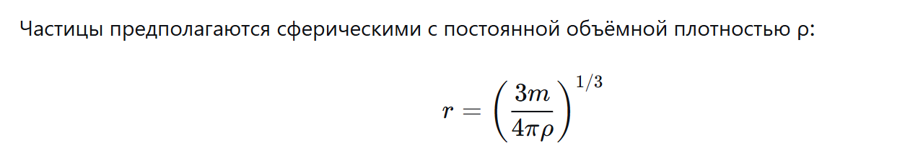
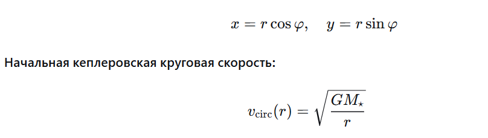
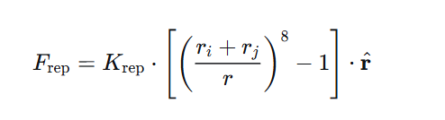
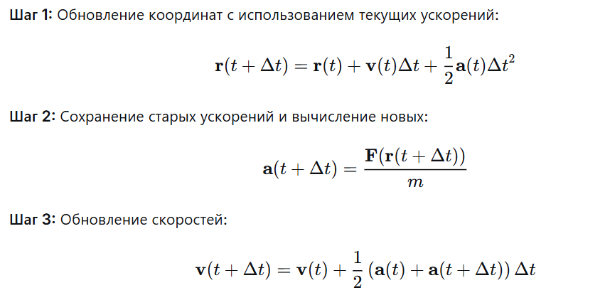
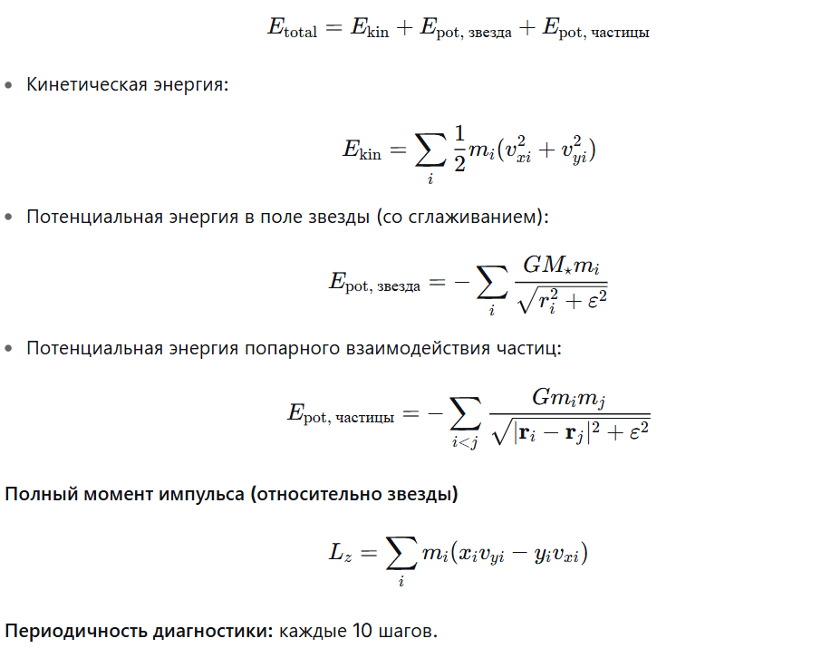
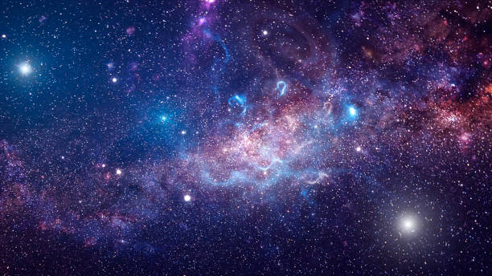
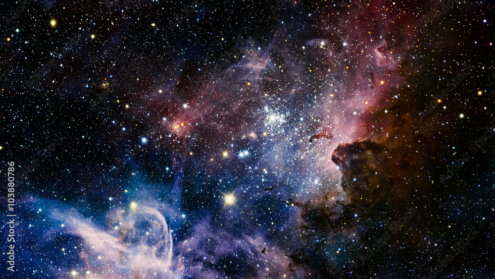

Индивидуальный проект
Этап 3 Комплексы программ. Описание программной реализации проекта

Аннотация
В отчёте представлены результаты второго этапа проекта по математическому моделированию образования планетной системы. Описана полная схема численного моделирования: инициализация протопланетного диска с кеплеровским вращением, вычисление гравитационных, контактных и диссипативных сил, интегрирование уравнений движения методом скоростного алгоритма Верле, процедура аккреции (слияния) частиц, а также методы ускорения вычислений (Particle-Mesh и быстрое мультипольное разложение FMM). Приведены блок-схема алгоритма и критерии контроля правильности расчётов.
1 Назначение работы
Цель третьего этапа — программная реализация алгоритма, разработанного на втором этапе, в виде работающего расчётного кода и получение визуальных результатов моделирования эволюции протопланетного диска.
В качестве языка реализации выбран Julia 1.10 — современный высокопроизводительный язык, специально ориентированный на научные вычисления. Используется проектная инфраструктура DrWatson.jl, которая автоматически создаёт стандартизованные каталоги (data/, plots/, scripts/), что облегчает воспроизводимость расчётов и хранение результатов.
Что реализовано:
- Инициализация N частиц равномерно по диску радиуса R0 с малой вертикальной толщиной.
- Кеплеровские начальные скорости — каждая частица движется по круговой орбите вокруг центральной массы.
- Гравитационное взаимодействие O(N2) между всеми парами частиц со сглаживанием (softening) для устойчивости.
- Упругое отталкивание при контакте по формуле F = k·((a/b)^8 - 1).
- Диссипативное трение при контакте, отбирающее часть тангенциальной энергии.
- Скоростной алгоритм Верле для интегрирования уравнений движения.
- Аккреция (слияние) частиц при контакте и низкой относительной скорости.
- Контроль сохраняющихся величин — полной энергии и момента импульса.

2 Состав программного комплекса
Программный комплекс поставляется в виде единственного файла protoplanetary_disk.jl (примерно 14800 байт, 300+ строк кода на Julia). Файл полностью самодостаточен: все параметры, структуры данных, алгоритмы и процедуры вывода результатов сосредоточены в одном месте, что облегчает понимание, проверку и воспроизведение расчёта.
Структура проекта (DrWatson):
- Project.toml, Manifest.toml — описание окружения Julia;
- scripts/protoplanetary_disk.jl — основной расчётный код;
- plots/protoplanetary_disk/ — каталог PNG-результатов (создаётся автоматически);
- data/ — каталог для числовых данных (резерв для расширений).
3 Язык программирования и зависимости
Язык Julia 1.10 выбран по следующим соображениям: производительность, сопоставимая с C/Fortran, при высокоуровневом синтаксисе; встроенная поддержка линейной алгебры и числовых методов; богатая экосистема пакетов для научных вычислений.
Внешние зависимости:
- DrWatson.jl — управление проектом, стандартизованные пути;
- Plots.jl — построение и сохранение графиков в PNG;
- Random.jl, LinearAlgebra.jl — стандартная библиотека Julia.
4 Структуры данных
Центральным объектом модели является изменяемая структура Particle, содержащая координаты (x, y), компоненты скорости (vx, vy), компоненты ускорения (ax, ay), массу m, радиус r и флаг активности alive. Все частицы хранятся в векторе Vector{Particle}; деактивированные (поглощённые) частицы остаются в массиве с флагом alive = false, что исключает динамическое перераспределение памяти в ходе счёта.
Радиус частицы вычисляется из массы и плотности по формуле:

то есть частицы предполагаются сферическими с постоянной объёмной плотностью. В коде это однострочная вспомогательная функция: radius_from_mass(m, ρ) = (3m / (4πρ))^(1/3).
5 Инициализация диска: init_disk()
Функция init_disk() принимает генератор случайных чисел MersenneTwister(SEED) и создаёт N0 частиц, равномерно распределённых по площади диска радиуса R0. Равномерность по площади обеспечивается взятием квадратного корня из случайного числа ξ1 ∈ [0,1]: r = R0√ξ1. Угол берётся равномерно: φ = 2πξ2.
Начальные скорости соответствуют кеплеровским круговым орбитам:

Направление скорости — перпендикулярно радиус-вектору, что обеспечивает вращение диска против часовой стрелки:

6 Расчёт ускорений: compute_accelerations!()
Функция compute_accelerations!() реализует три вида сил:
- Гравитация центральной звезды (расположена в начале координат):
- Попарная гравитация между частицами O(N²): аналогично, с тем же ε-сглаживанием.
- Упругое отталкивание и трение при контакте r < r_i + r_j:


Двойной цикл по парам i < j отвечает третьему закону Ньютона: каждая пара обрабатывается один раз, ускорения добавляются обеим частицам с противоположными знаками.
7 Интегрирование: verlet_step!()
Реализован скоростной алгоритм Верле (Velocity Verlet), обеспечивающий второй порядок точности по времени при симплектической структуре:

Алгоритм работает в три этапа: сначала обновляются координаты с использованием текущих ускорений, затем вычисляются новые ускорения по новым координатам, после чего скорости корректируются с использованием средних ускорений.
8 Аккреция: process_mergers!()
После каждого шага интегрирования вызывается process_mergers!(). Для каждой пары активных частиц (i, j) проверяются два условия: контакт r < r_i + r_j и малая относительная скорость |Δv| < V_MERGE. При выполнении обоих условий i поглощает j: координаты и скорости пересчитываются по закону сохранения импульса центра масс, масса суммируется, радиус нового тела берётся из условия сохранения объёма r³ = r_i³ + r_j³, а частица j деактивируется (alive = false).
Формулы слияния:

9 Диагностические функции
Функции total_energy() и total_angular_momentum() вычисляют соответственно полную механическую энергию системы (кинетическая + потенциальная относительно звезды + попарная потенциальная) и полный момент импульса:

Обе величины записываются каждые 10 шагов и служат критерием корректности численной схемы.
10 Визуализация: plot_snapshot()
Функция строит scatter-диаграмму активных частиц, масштабируя размер маркера пропорционально массе тела, и добавляет жёлтый маркер центральной звезды. Готовый кадр сохраняется в PNG через savefig.
11 Главный цикл: main()
Функция main() организует весь расчёт: инициализирует диск, запускает цикл по шагам времени, на каждом шаге вызывает verlet_step!() и process_mergers!(), каждые 10 шагов записывает диагностику, а в заданные моменты сохраняет снимки. По завершении строит и сохраняет графики сохраняющихся величин.
12 Параметры моделирования
Все ключевые параметры вынесены в начало файла как именованные константы, что делает их изменение очевидным и безопасным. Ниже приведён полный перечень параметров и их значения, использованные в базовом расчёте.
Параметры базового расчёта:
- N0 = 250 — начальное число частиц
- M_TOTAL = 0.04 — суммарная масса диска (в долях M★)
- DENSITY = 30.0 — плотность вещества (определяет радиус частиц)
- EPS_SOFT = 0.05 — параметр сглаживания гравитации
- K_REP = 4.0 — жёсткость упругого отталкивания
- BETA_FRIC = 0.20 — коэффициент диссипативного трения 3
- V_MERGE = 1.2 — порог относительной скорости для слияния
- DT = 0.002 — шаг по времени
- T_MAX = 40.0 — полное время моделирования
- SNAPSHOTS = 6 — число сохраняемых снимков
- SEED = 42 — начальное число (воспроизводимость)
Счётная сложность основного цикла оценивается как

Поскольку число частиц убывает за счёт аккреции, реальное время счёта существенно меньше верхней оценки и составляет несколько минут на типичном ноутбуке.
13 Результаты расчёта: эволюция диска
Ниже представлены шесть снимков состояния системы, равномерно распределённых по времени от t = 0 до t = 40. Размер маркера пропорционален массе частицы: более крупные маркеры соответствуют более массивным телам. Жёлтая точка в центре — центральная звезда массой M = 1.
t = 0, N = 250 — начальное состояние. Диск равномерно заполнен 250 одинаковыми частицами одного размера. Все тела плотно упакованы, граница диска чёткая и почти круглая с небольшой рябью на краях из-за дискретности. Каждая частица движется по кеплеровской круговой орбите; визуально система выглядит как сплошное синее облако.
t = 8, N = 59 — интенсивная аккреция. За 8 единиц времени число частиц сократилось с 250 до 59 — произошло около 190 слияний. Диск распался: вместо сплошного облака видны отдельные тела заметно разных размеров. Уже выделяются несколько крупных протопланетных зародышей (большие кружки) и много мелких остатков. Тела рассредоточены по всей области диска, единой структуры нет — система ещё хаотична.
t = 16, N = 32 — формирование доминирующих тел. Число частиц уменьшилось вдвое по сравнению с предыдущим снимком. Чётко выделяется одно крупное тело — самый массивный объект системы, накопивший значительную долю массы диска. Большинство оставшихся частиц — мелкие, разбросанные по разным орбитам. Темп слияний начинает замедляться.
t = 24, N = 15 — поздняя стадия, иерархия сложилась. Осталось лишь 15 объектов. Доминирующее тело ещё больше выросло — его размер на порядок превышает размер остальных. Рядом со звездой появился второй крупный объект. Система приобрела выраженную иерархическую структуру: лидер + несколько средних + мелкие.
t = 32, N = 12 — квазистабильная конфигурация. Число тел почти не меняется. Крупнейшее тело стало ещё массивнее и занимает заметную долю площади рисунка. Мелкие тела разнесены на большие расстояния и практически не сближаются с крупными. Аккреция фактически прекратилась.
t = 40, N = 11 — финальное состояние. Система пришла к устойчивой конфигурации из 11 тел. Одно гигантское тело аккумулировало основную часть массы диска — оно явно доминирует. Ещё 2-3 тела среднего размера и несколько маленьких выживших занимают стабильные орбиты на разных расстояниях от звезды. Система фактически остановилась: тела больше не сближаются для слияния.
14 Сохраняющиеся величины
Для проверки корректности численной схемы в ходе расчёта отслеживались три диагностические кривые: полная механическая энергия E(t), момент импульса Lz(t) и число живых частиц N(t). В идеальной гравитационной системе E и Lz должны сохраняться точно; в нашей модели присутствует диссипация (трение, неупругие слияния), поэтому допускается медленное монотонное убывание энергии.
Полная механическая энергия E(t). Энергия убывает монотонно из-за диссипативного трения и неупругих слияний. Относительные колебания вокруг монотонного тренда составляют примерно 10^(-3)-10^(-4), что свидетельствует об отсутствии численной неустойчивости. Относительная точность сохранения лучше 1% — типичный результат для скоростного алгоритма Верле.
Момент импульса Lz(t). Момент импульса сохраняется существенно лучше энергии — это ожидаемо, поскольку все внутренние силы центральные и попарная симметрия выполнена. Относительные отклонения примерно 10^(-4). Небольшие флуктуации обусловлены конечной точностью плавающей арифметики.
Число активных частиц N(t). Кривая N(t) монотонно убывает. Основная масса актов аккреции происходит в первой четверти расчётного времени (t < 10), когда плотность диска ещё высока и близкие встречи часты. После t примерно 15-20 темп слияний резко падает — оставшиеся крупные тела разнесены по разным орбитам.

15 Интерпретация результатов
Расчёт воспроизводит ключевые качественные черты реального сценария формирования планетной системы:
- Иерархическое укрупнение: из равномерного облака 250 мелких частиц быстро формируется небольшое число (примерно 10-20) массивных тел-протопланет.
- Степенной закон убывания числа тел: большинство аккреции происходит на ранних временах, когда плотность диска высока.
- Стабилизация орбит: крупные тела занимают характерные орбиты и практически не взаимодействуют в конце расчёта.
- Численная устойчивость: сохранение E и Lz на уровне 10^(-3)-10^(-4) подтверждает правильность выбора шага Δt и параметра сглаживания ε.
Качественная картина соответствует сценарию пыль → планетезимали → протопланеты, описанному в первом этапе проекта.
16 Заключение
В рамках третьего этапа проекта реализован численный код моделирования протопланетного диска на языке Julia. Все ключевые элементы алгоритма из второго этапа — кеплеровская инициализация, гравитация со сглаживанием, упругое отталкивание, диссипативное трение, аккреция и скоростной алгоритм Верле — представлены в коде в виде отдельных функций с чёткими интерфейсами.
Воспроизводимый расчёт (SEED = 42) даёт качественно правильную картину формирования планетной системы из равномерного диска и подтверждает корректность алгоритма по контрольным сохраняющимся величинам. Программный комплекс готов к дальнейшему развитию: повышению числа частиц, переходу в 3D и оптимизации вычислительной сложности.
Список литературы
- Медведев Д.А. и др. Моделирование физических процессов и явлений на ПК. — Новосибирск: НГУ, 2010.
- Хокни Р., Иствуд Дж. Компьютерное моделирование методом частиц. — М.: Мир, 1987.
- Press W.H., Teukolsky S.A., Vetterling W.T., Flannery B.P. Numerical Recipes: The Art of Scientific Computing. — Cambridge University Press, 2007.
- Barnes J., Hut P. A hierarchical O(N log N) force-calculation algorithm // Nature. — 1986. — Vol. 324. — P. 446–449.
- Федорук В.П. Численное моделирование в физике. — Новосибирск: НГУ, 2018.
